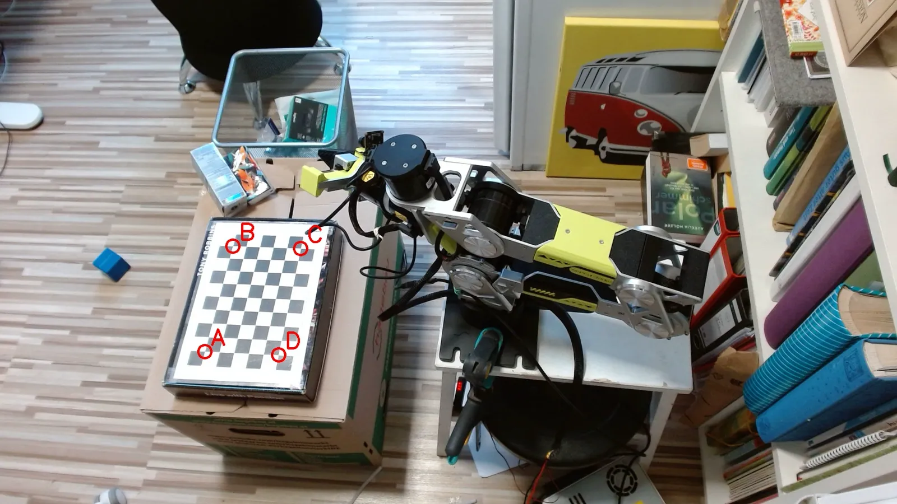

Tag 3 · Samstag, 21. November 2026
Umzug auf den Roboter-Laptop und der Plan-Wechsel bei der Kalibrierung
Neuer Laptop, App 3.8, YOLO-World – und eine manuelle Kalibrierung, die scheitert und uns zu ChArUco bringt.

Seit heute hat das Projekt einen dedizierten Roboter-Laptop (MacBook Pro M1, 8 GB). Der Mac mini bleibt im Büro. Der Eintrag entsteht mitten in der Arbeit.
🛠Was wir gemacht haben
- Projektordner vom Mac mini auf den Laptop übertragen, PCAN-Treiber im Benutzerverzeichnis (kein Admin auf dem Laptop).
- App 3.7 (Guard v3.3): keine falschen „blockiert“-Freezes mehr beim Anheben über Kopf, Greifer öffnet wieder vollständig,
safe_zeroist geregelt statt blind, Kameras werden per Name statt Index gewählt. - App 3.8: Session-Aufnahme mit Live-Markern (✓ / ✗ / neuer Versuch / verwerfen), Labels pro Episode, Export nur erfolgreicher Episoden, geteilte Kameras per Shared Memory und Speichern in etwa 2 s statt 13–17 s.
- YOLO-World (offenes Vokabular): rund 34 ms pro Bild auf der Apple-GPU (MPS) gegenüber rund 224 ms auf der CPU.
- Kamera-Kalibrierung: Intrinsics mit 0,81 px Reprojektionsfehler, Tisch-Homographie mit 0,60 px.
💭Denkweise
Der Roboter soll Objekte per Textbefehl greifen („nimm die Nivea-Dose, bring sie in den Müll“). Dafür brauchen wir Objekterkennung und die Kette Kamera → Tisch → Roboter.
Unsere Leitlinie: Best Practices übernehmen, nichts neu erfinden – YOLO-World, OpenCV-Kalibrierung, LeRobot-Standardwerkzeuge. Und: Die Kalibrierung muss schnell wiederholbar sein, weil Brett und Kamera nie exakt gleich stehen.
🏆Wins
- Objekterkennung läuft schnell genug für Echtzeit (rund 30 fps).
- ChArUco-Brett erkannt: 24 von 24 Ecken, 17 Marker.
- Aufnahme-Workflow mit Markern gebaut und deutlich beschleunigt.
- Guard v3.3 gegen alle bisher geloggten Freezes nachgespielt – an der echten Hardware aber noch nicht geprüft.

💥Fails
- Aufnahme ging zunächst gar nicht: Das Paket
datasets(Extralerobot[dataset]) fehlte. - Kamera-Indizes springen nach dem Ein- und Ausstecken, heute mindestens zweimal. Zudem fielen Kameras am gemeinsamen USB-2.0-Hub aus (vermutlich Überlastung).
- Die manuelle Eck-Kalibrierung ist gescheitert: Das Brett rutschte, die Eckenreihenfolge war beim Schachbrett mehrdeutig, und Arm und Kabel verdeckten das Brett. Nur die Ecken A und B ließen sich lesen, C und D nicht – keine nutzbare Roboter-Tisch-Kalibrierung.
- Kalibrier-Aufnahme und Recorder wollten dieselbe Telemetrie-Schnittstelle.
- Der Laptop verlangte für jeden Befehl eine Freigabekarte, das bremste spürbar.
📌Learnings
- Manuell Ecken anfahren ist fehleranfällig und kostet Zeit – Hand-Auge-Kalibrierung gehört automatisiert (OpenCV
calibrateHandEye). - ChArUco ist robuster als ein einfaches Schachbrett: eindeutige Ecken, auch bei Teilverdeckung.
- Kurze Aufnahmen mit ähnlichen Ansichten (unsere dauerte nur etwa 35 s) ergeben schwache Intrinsics – wir wiederholen sie mit variierten Posen.
- Kameras per Gerätename wählen, den USB-Hub nicht überlasten, vor Aufnahmen alle Python-Extras prüfen.
Nächster Schritt: Der Arm fährt 15–20 Posen über dem Brett (ChArUco 7×5, 35 mm Felder) und kalibriert sich selbst; ein Button startet das erst nach Bestätigung. Das ist bislang nur geplant.

🔗Quellen
Seeed reBot B601-RS Plugin/URDF, LeRobot (Hugging Face), OpenCV (Kalibrierung, ArUco/ChArUco, calibrateHandEye), Ultralytics YOLO-World, ROS-Praxis zur Hand-Auge-Kalibrierung (MoveIt, easy_handeye) als Referenz. Einzelne Links haben wir nicht protokolliert.
</>Code-Stand
Teleop-App 3.8 läuft auf dem Laptop, Detektion läuft, Aufnahme ist neu gebaut, aber noch nicht mit dem echten Arm genutzt. Die drei Real-Arm-Tests von 3.7 (Überkopf heben, Greifer ganz öffnen, Stopp aus Überkopf) stehen noch aus.
Noch nicht veröffentlicht Code wird veröffentlicht, sobald freigegeben.